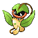

Назад
Випинбелл
Випинбелл — Покемон 1 поколения под номером 70 в Покедекс. Обитает он в регионе Канто и относится к Травяному и Ядовитому типу. На спине у Випинбелла есть большой крючок. Ночью этот Покемон цепляется за ветку дерева и засыпает. Если он двигается во сне, то может упасть и проснуться.
Тип:
Травяной
Ядовитый
Эволюция
# 070 Випинбелл
=>

# 071 Виктрибел